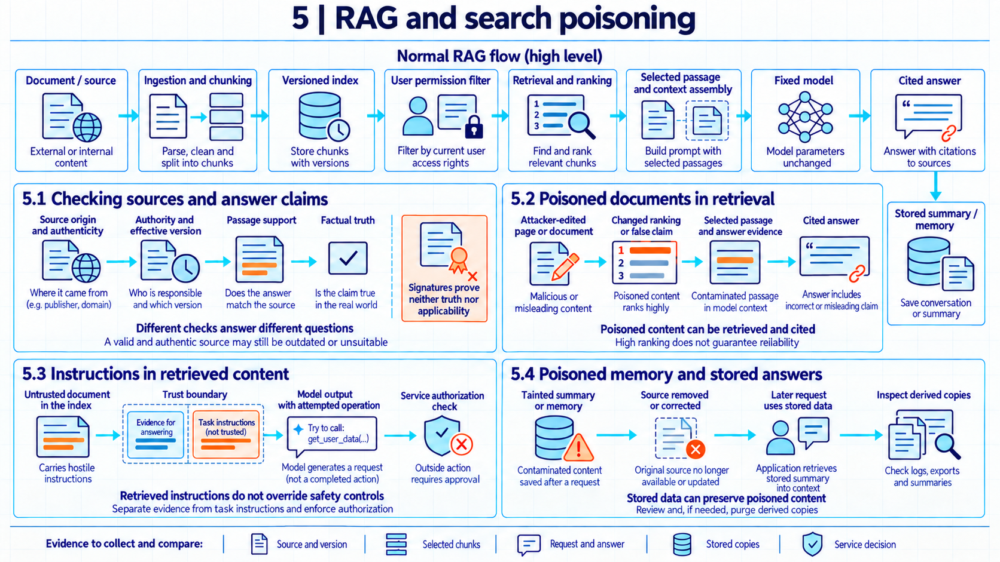

5 RAG and search poisoning
Adding false information or hostile instructions to retrieved material can change an application’s answers without changing model weights. Stored copies can carry that influence into later requests.
Adding false information or hostile instructions to retrieved material can change an application’s answers without changing model weights. Stored copies can carry that influence into later requests.

In May 2024, Google’s AI Overviews feature told some searchers to use glue to keep cheese on pizza and to eat rocks. Google’s head of Search, Liz Reid1, attributed the glue advice to sarcastic discussion-forum content and described the rocks answer as relying on satire republished on another website. The company described more than a dozen changes that followed. This account shows that unsuitable source material can produce bad advice without establishing deliberate poisoning. An attacker who can place or edit pages may try to exploit that retrieval path.
Suppose an employee asks an organization’s AI application for the current refund limit. The application searches company documents and uses the returned passages to answer. An attacker who can alter one of those documents may influence the answer even though the employee’s question and the model weights stay unchanged. Investigating a wrong answer would therefore require the source versions, the selected passages, and any stored results reused for that request.
In retrieval-augmented generation, or RAG, an application retrieves external information to help a model produce an answer. Lewis et al.2 described a RAG architecture that combined a trained generator with an external passage index. The following application design uses the same broad idea: it selects passages and includes them in a model request. Updating that collection can change the information available for an answer without retraining the generator.
Preparing a document for search changes how it is represented. An ingestion job fetches source files and parses their contents into text. A parser may extract characters from a file or use optical character recognition on a scanned page. The job divides the text into document chunks, passages small enough to retrieve separately. Searching smaller passages helps locate a specific rule in a long manual and avoids sending the whole manual to the model. Splitting a rule from its exception, however, can change how the retrieved passage is understood.
Searching by related meaning requires a way to compare a question with many passages. For similarity search, an embedding represents a chunk as a vector of numbers. An embedding model produces these vectors so that a comparison can rank passages related to the question. This conversion makes large collections searchable through numerical comparisons, but the scores do not establish who wrote a passage or whether it is true. An index stores searchable entries connected to the original chunks and their source versions. Some indexes support keyword search as well as vector search.
At answer time, a retriever searches the index for candidate passages. With vector search, it also represents the employee’s question as an embedding that can be compared with the stored vectors. A reranker may reorder the candidates using another scoring method. Context assembly selects and formats the passages included in the model request. A passage must enter the request for the answer-generating model to follow its text directly. Other retrieval failures can act earlier: changed rankings can exclude useful evidence, and a model used for reranking can itself receive hostile content. NIST3 distinguishes an attacker’s control of these external resources from control of training data.
The resulting request combines instructions from the application and employee with material written by other people. Permission to read a document does not establish its accuracy or give its author permission to direct the application. Two separate questions follow: whether the retrieved facts are dependable and whether the model treats retrieved text as instructions.
The organization may run the model itself or send the assembled request to an external model service. Either arrangement can use an organization-managed document collection. When a provider also manages retrieval, the organization may need provider records to identify which passages entered a request.
5.1 Checking sources and answer claims
An adversary may be able to edit a source document, submit a new record, or supply a correction that later enters the collection. Knowledge poisoning means deliberately manipulating such information so that the application uses it to produce an attacker-desired result. A false refund limit or payment account can change an answer without an instruction telling the model to abandon its task. An outdated or mistaken document can produce a similar error accidentally. The wrong answer alone does not establish malicious intent.
Checking who issued a policy is different from checking whether its contents are correct. The source checks below separate those questions.
| Property | Question answered | Limit |
|---|---|---|
| Origin | Which system or publisher supplied the file? | A supplier portal may contain a mistaken notice. |
| Authenticity | Is this the content that the identified source issued, without an unauthorized change? | An authentic document can contain a false statement. |
| Source authority | Is this source responsible for the rule or decision being described? | A supplier notice cannot establish the organization’s refund policy. |
| Freshness | Which version applies at the relevant time? | The newest upload may be a draft or may not yet be effective. |
| Passage support | Does the cited passage support the specific answer claim? | A false source can support a false answer. |
| Factual truth | Is the claim correct? | Matching words in a citation does not settle this question. |
These distinctions explain why authenticity checks do not settle whether an answer is correct. A signature can help establish who signed a document and whether its signed contents changed, provided the verification key and trust relationship are sound. It does not establish that the signer knew the correct refund limit. A hash compares bytes with a reference value, but an attacker who can replace both can conceal a change. An approved source list can exclude unrelated publishers while still admitting a mistaken or compromised policy source.
To investigate a misleading passage, the organization needs to connect it to the document version from which it was extracted. The ingestion job can record the source system and object, version, extraction time, parser, and access labels. Linking chunks to those records makes it possible to find related entries after a correction. It does not automatically identify summaries and copies created later, unless their source relationships are also recorded. A separate business rule can resolve a known conflict, for example by preferring the currently effective policy over an older help page.
Source review delays new material, and retaining version relationships consumes storage. Reprocessing a large collection after a correction also takes time. A strict version rule may miss an authorized exception, while apparently independent sources may repeat the same false statement. If an attacker misuses an approved author’s account, the intake record can show an approved origin for malicious content. The record may then help investigators find affected passages even though it did not prevent the wrong answer.
Example
Current policy and an older page. Suppose an employee asks for the current refund limit. A test inspects the answer against two retrieved passages. Passage A comes from refund-policy-v5, which the organization’s version record identifies as the currently effective policy, and gives a limit of 150 currency units. Passage B comes from a superseded help page and gives 120. For this test, the current policy takes precedence when both passages address the same kind of refund.
The check compares each material claim in the draft answer with the exact passages. The table distinguishes a supported current claim, a claim with no support, and a historical claim contradicted by the older page.
| Answer claim | Retrieved support | Intermediate decision |
|---|---|---|
| The current refund limit is 150. | The version record identifies policy version 5, which states 150, as currently effective. | Supported under the example’s version rule. |
| Refunds have no limit. | Neither passage states this. | Unsupported. |
| The limit was always 150. | The superseded page gives 120. | Contradicted by the retrieved historical evidence. |
The expected answer gives 150, cites refund-policy-v5, and omits or flags the unsupported and contradicted claims. A draft giving 120 would have textual support in Passage B while failing the current-version rule.
The conclusion depends on the supplied passages and version record. If that record incorrectly marks a draft as effective, or the policy file has been forged, comparing the answer with its words will not reveal the source error. Establishing which policy actually applies requires checking the document and the version decision as well.
An answer that follows the available passages is often called a grounded answer. Grounding still depends on the choice and quality of those passages. The NIST Generative AI Profile4 treats false statements and false citations as confabulation risks and recommends comparison with known ground truth through human review, automated evaluation, or both. An automated citation checker also needs testing, since it can repeat the generator’s mistake.
Lewis et al.5 tested knowledge updates by querying their Natural Questions model about 82 world leaders who changed between December 2016 and December 2018. Answers were less accurate when the index year did not match the year being evaluated. This published experiment shows that changing the collection can affect answer freshness. It does not establish that the newest document is always the applicable or correct one.
A document can also attack the software that parses it, a runtime risk connected to service intrusion (Chapter 9). Permission checks address a different failure: private text could enter a request for an employee who is not allowed to read it. Those checks require a verified employee identity and a reliable link from each chunk to its source record, taught in Chapter 11 (Retrieval access and disclosure). Even when those checks succeed, readable content can still be false or hostile.
5.2 Poisoned documents in retrieval
For a false passage to change an answer through retrieval, it has to reach the model’s context and affect generation. A poisoned document may remain in the collection without ranking for the targeted question. It may rank but be excluded during final selection. It may enter the context without persuading the model to use its claim. An evaluation should therefore record both exposure to the material and the resulting answer.
In PoisonedRAG, Zou et al.6 studied passages designed to make a retrieval application produce an attacker-selected answer to a target question. Their threat model permits inserting malicious text into the knowledge database. The white box and black box settings differ in the attacker’s access to the retriever. The design separates a retrieval condition, getting the passage selected, from a generation condition, inducing the target answer once it is selected (PoisonedRAG7). These are published research experiments under specified access assumptions, not evidence that an attacker can break into any production index.
The study also tested query paraphrasing, duplicate removal, and retrieval of additional passages. These measures did not eliminate the attack in the evaluated configurations (PoisonedRAG8). A result from one dataset and retriever cannot determine a production service’s failure rate. It does show why checking whether a suspicious passage was selected and checking whether the answer changed are separate measurements.
Selection depends partly on how the retriever represents relevance. Sparse search uses term-based representations, so including terms from a target question can affect a passage’s rank. The effect depends on the scoring rule, which may limit the value of repetition. Dense search compares learned embeddings and can rank related passages that use different words. Applications can combine these signals. Neither kind of score authenticates the author or verifies the factual claim.
Example
Separating exposure from answer changes. Suppose an evaluation uses 200 target questions and 800 ordinary questions. Before poisoning, the application gives the reference answer to all 200 target questions. An attacker then submits five crafted passages per target question, for 1,000 passages in total. The model, ordinary collection, and question sets remain fixed during the comparison.
Assume ingestion admits 940 of the 1,000 submitted passages and rejects 60 under the test’s file-type and source rules. The admission rate is 94 percent. Retrieval and reranking place at least one injected passage in the final context for 150 of the 200 target questions, an exposure rate of 75 percent. The generated answer changes to the attacker’s target in 90 of those 150 cases: 60 percent of exposed questions and 45 percent of all target questions. Separately, the application completes 760 of 800 ordinary tasks, or 95 percent. Reporting only ordinary-task performance would conceal the targeted failures.
Admission screening rejected some submissions, but the remaining passages still reached many target requests. The 75 percent exposure rate and 45 percent overall attack success rate identify different results. If a new control reduced exposure while leaving the conditional success rate unchanged, it would be limiting delivery rather than making the model resistant to the selected text. A comparison should also retain ordinary-task results, because excluding more passages can remove useful answers.
The control has to match the attacker’s access. Source restrictions can reject contributions outside an allowed collection. Version checks can detect an unapproved replacement relative to a protected reference. Neither rejects a false statement deliberately issued by a trusted writer. At retrieval, grouping duplicate passages can stop repeated copies from occupying several positions, but differently worded false claims may remain. A malicious passage and a correct passage can both exceed the same similarity threshold.
At context assembly, restricting the amount of external material can reduce exposure and also remove needed evidence. A rule requiring corroboration can help only if the additional sources are trustworthy and sufficiently independent. Repeated copies of one false claim do not provide independent support. A verifier model may repeat the generator’s mistake or follow the same hostile text. These are controls to test against the affected path, with refusal of legitimate questions and added processing time recorded alongside attack outcomes. The PoisonedRAG results9 illustrate limits of several candidate defenses in their tested setting.
5.3 Instructions in retrieved content
According to TechCrunch’s account of The Guardian’s December 2024 tests10, the newspaper built web pages containing text that human visitors could not see and asked OpenAI’s ChatGPT search tool to summarize them. When the hidden text told the tool to return a favourable review, the summary came out positive even though the visible page carried negative reviews. Hidden fake reviews skewed the summary in the same way. The test covered one tool at one time. It does not show how common such pages are or how the tool behaves now.
Some retrieved material tries to direct the application rather than supply facts. Indirect prompt injection occurs when instructions arrive through external material the application processes, such as a document, web page, email, or tool result. An attacker could combine a false return window with text directing the assistant to send a private contract elsewhere. The distinction is the role the content tries to acquire: evidence for an answer or directions governing behavior. It does not depend on imperative grammar. An attacker can place directions inside a quotation or present them as a previous message or an existing rule. Instructions arriving through the caller’s own message belong to the direct path taught in Chapter 4 (Input attacks and response tampering).
Greshake et al.11 demonstrated this path in early 2023 systems and applications they constructed with GPT-4. Their experiments placed instructions in material encountered during use, without changing the model’s weights. An instruction need not be prominent in the page the employee sees. If an extractor includes hidden or visually unobtrusive text in the model request, that text can still influence generation.
The application’s intended distinction is clear: developer and user instructions define the task, while retrieved content supplies evidence. A model may nevertheless follow instructions inside that content. Source labels and delimiters preserve the application’s account of where text came from, but do not by themselves guarantee how the model will use it. NIST and Greshake et al.12 and OWASP13 discuss separation, screening, and limited privileges as mitigations whose effects depend on the application.
Workflow diversion means a change away from the application’s intended activity. The trace below separates that change from a completed external effect.
Example
An injected send operation. Suppose an employee may read a private contract but is not permitted to send it outside the organization. The employee asks for a supplier-policy summary, and a retrieved page contains directions to send that contract to an outside address. If the model generates a tool call for that send, it has departed from the summary task. If the application submits the call, the record shows an attempted operation. The receiving service should reject a request outside the employee’s permissions. A rejected attempt and a completed disclosure are different outcomes, so the trace should include the generated call, submitted request, service decision, and any actual transmission.
The enforcement needed for such operations is developed in Chapter 10 (Indirect prompt injection), and approval binding for the attempted operation in Chapter 12 (Agent action authorization).
One reported experiment in the Greshake et al. study14 tested an injection that made Bing Chat seek the user’s real name. In a recorded conversation, the researchers first asked about the weather, and the system subsequently asked personal questions while retaining the injected objective across turns. This was a researcher-run demonstration on the 2023 system. It shows that externally supplied instructions could redirect the conversation under that setup, without establishing current product behavior or a customer data breach.
Controls can limit different consequences of that path. Restricting sources and context can reduce the material exposed to the model, at the cost of missing relevant information. Screening can reject recognized instruction patterns but may miss unfamiliar wording and reject legitimate quotations. Separating untrusted fragments preserves useful source information, while authorization checks at a receiving service govern what an attempted operation may do. When the model still follows hostile text, those service checks remain responsible for rejecting unauthorized access or action. An evaluation should measure both model diversion and completed effects rather than treating either one as the other.
5.4 Poisoned memory and stored answers
In a September 2024 research demonstration involving the ChatGPT macOS app, security researcher Johann Rehberger15 showed that a web page or document could plant instructions in its long-term memory. Later conversations then carried the planted instruction, which sent the user’s messages to a server he controlled through image requests, across chat sessions. OpenAI blocked that sending channel in its macOS app. Rehberger noted that untrusted content could still write memories.
An application may retain conversation history, cached answers, generated summaries, or agent memory: stored information that an agent reads during later tasks. These records can include prior tool results, preferences, or examples of completed work. If the application stores a contaminated answer and later reuses it, correcting the original source may leave an influential copy behind. The persistence is in stored data, even while model weights remain fixed.
Example
A false claim after source removal. Suppose an application searches both a document index and a store of generated summaries. An attacker-edited notice falsely identifies B-204 as a supplier’s payment account. Ingestion extracts chunk-91 from the notice. An employee asks which account to use, the model receives that chunk, and its answer repeats B-204. The application saves summary-12, which repeats the account claim, for later retrieval.
A reviewer later finds the notice was false and deletes the source document and its index entry for chunk-91. A second employee then asks the same supplier question. Retrieval finds no chunk-91, but it does find summary-12 in the summary store because that store is searched alongside the document index. The final context includes the summary text, and the model again answers B-204.
The conclusion is that deletion at the document index did not reach the derived summary store. Recovery would need the version link from the source to chunk-91 and from that answer to summary-12, plus removal or correction in each tracked store and a fresh test of the retrieval route. A hash search for the original wording alone could miss the summary because the summary restates the same claim in different words.
The repeated answer follows from the example’s storage design. A model call without retained context would not have that reuse path. Investigators therefore need to identify the stores actually searched for the later request and the versions returned from each. Greshake et al.16 also demonstrated persistence through a key-value memory store added to their experimental application, where reading a saved note could reintroduce an injected instruction. The experiment illustrates how rereading stored instructions can restore their influence.
In AgentPoison, Chen et al.17 studied malicious examples inserted into an agent’s memory or knowledge base. Their core setup gives the attacker partial write access to that database and white-box access to the embedding model: the attacker can inspect that model and use its gradients to optimize a retrieval trigger. They separately test whether those triggers transfer to other embedding models, including one available only through an API. When a later request contains the trigger, retrieval can select the stored malicious example. No additional model training or fine tuning is required. The driving, question-answering, and health-record tasks are research evaluations, not reports of production crashes or clinical incidents.
A cleanup investigation can start from the changed source and follow recorded relationships to chunks, answers, summaries, and memory entries. NIST’s Generative AI Profile18 recommends tracking dataset changes, including deletions and corrections. Applying that principle to this application means recording which derived stores were checked or rebuilt. A fresh session can test whether a saved conversational history was responsible, while repeated retrieval tests examine indexes and other persistent stores. Neither test covers copies outside the inspected system.
If a provider manages the index or memory, the organization may need the provider to locate and remove copies it cannot inspect. A model replacement alone would leave those stores untouched. Choosing containment and recovery actions therefore depends on the affected components and available evidence, taught in Chapter 16 (AI incidents: containment and recovery). Responsibility for provider-managed stores also needs to be specified, as developed in Chapter 21 (Responsibility and legal duties). Permission to read or modify another employee’s saved memory is a separate authority problem covered in Chapter 12 (Agent action authorization).
The same retrieval failure can affect a business assistant or a security tool that reads hostile alerts and files. A test needs to preserve the source, selected context, generated output, and any resulting action so that later release and operational decisions concern the same failure mechanism. Chapter 14 (Evidence for release decisions) develops that testing method, and Chapter 18 (Evaluating AI for defense) applies it to security work.
An answer or attempted action may also contain private information. A wrong answer alone does not establish a leak: protected information must become available to an unauthorized recipient. Chapter 6 (Data leakage and privacy attacks) follows those disclosure paths and distinguishes application-held data from information extracted through model queries.
Note
Chapter checkpoint. Suppose an employee asks for a supplier’s payment account. The application retrieves a current policy, a superseded help page giving a different account, and a supplier notice containing instructions to send a private contract outside the organization. The answer repeats the older account. The model also generates a send operation, which the application submits and the document service rejects. What evidence separates the failures?
Answer. Both account passages were readable, but the organization’s version rule identifies the current policy as the relevant source. Repeating the older account is a freshness failure even though that older passage supports the answer’s wording. The supplier notice supplies an indirect injection path, and the generated send operation shows diversion. The submitted request shows an attempt. A trusted rejection record with no transmission shows that this attempt did not disclose the contract. The investigation should also check whether any answer, notice, or summary was saved for reuse. These findings concern the inspected request and stores, not all possible copies.
Liz Reid, “AI Overviews: About last week,” Google (May 30, 2024), source. Google’s own account attributes these examples to satirical and discussion-forum material. It also mentions searches apparently intended to elicit errors, so it does not establish that no user acted adversarially. It describes the feature at that time.↩︎
Patrick Lewis et al., “Retrieval-Augmented Generation for Knowledge-Intensive NLP Tasks,” Advances in Neural Information Processing Systems 33, 9459-9474 (2020), sections 2 and 4.5, conference paper. The paper’s RAG-Sequence and RAG-Token formulations combine probabilities over retrieved documents. The application example here instead assembles selected passages in one request.↩︎
Apostol Vassilev et al., Adversarial Machine Learning: A Taxonomy and Terminology of Attacks and Mitigations, NIST AI 100-2e2025, National Institute of Standards and Technology (2025), sections 3.1 and 3.4, especially printed pp. 38-41 and 50-53 (PDF pp. 51-54 and 63-66), official report. Context and resource control are treated separately from training data control.↩︎
National Institute of Standards and Technology (2024), Artificial Intelligence Risk Management Framework: Generative Artificial Intelligence Profile, NIST AI 600-1, section 2.2, “Confabulation,” printed p. 6, and action MP-2.3-001, printed p. 24, source.↩︎
Patrick Lewis et al., “Retrieval-Augmented Generation for Knowledge-Intensive NLP Tasks,” Advances in Neural Information Processing Systems 33, 9459-9474 (2020), sections 2 and 4.5, conference paper. The paper’s RAG-Sequence and RAG-Token formulations combine probabilities over retrieved documents. The application example here instead assembles selected passages in one request.↩︎
Wei Zou, Runpeng Geng, Binghui Wang and Jinyuan Jia, “PoisonedRAG: Knowledge Corruption Attacks to Retrieval-Augmented Generation of Large Language Models,” 34th USENIX Security Symposium, USENIX Association (2025), pp. 3827-3844, sections 3.1-3.2, official publication, paper. Controlled study assuming ability to introduce malicious texts into the target knowledge database, with retriever access differing across white box and black box cases.↩︎
Wei Zou et al., “PoisonedRAG: Knowledge Corruption Attacks to Retrieval-Augmented Generation of Large Language Models,” 34th USENIX Security Symposium, USENIX Association (2025), pp. 3827-3844, sections 4.1-4.2, paper. The design separates retrieving the injected text from inducing the target answer once that text is selected.↩︎
Wei Zou et al., “PoisonedRAG: Knowledge Corruption Attacks to Retrieval-Augmented Generation of Large Language Models,” 34th USENIX Security Symposium, USENIX Association (2025), pp. 3827-3844, sections 5.1 and 7.1-7.4, paper. The tested defenses include query paraphrasing, exact duplicate filtering and retrieving more passages. Results depend on the tested datasets, models and retrievers.↩︎
Wei Zou et al., “PoisonedRAG: Knowledge Corruption Attacks to Retrieval-Augmented Generation of Large Language Models,” 34th USENIX Security Symposium, USENIX Association (2025), pp. 3827-3844, sections 5.1 and 7.1-7.4, paper. The tested defenses include query paraphrasing, exact duplicate filtering and retrieving more passages. Results depend on the tested datasets, models and retrievers.↩︎
The Guardian, “ChatGPT search tool vulnerable to manipulation and deception, tests show” (December 24, 2024), as reported in TechCrunch, “ChatGPT Search can be tricked into misleading users, new research reveals” (December 26, 2024), source. The Guardian page itself was not retrieved. Recheck its wording before quoting.↩︎
Kai Greshake, Sahar Abdelnabi, Shailesh Mishra, Christoph Endres, Thorsten Holz and Mario Fritz, “Not what you’ve signed up for: Compromising Real-World LLM-Integrated Applications with Indirect Prompt Injection,” arXiv:2302.12173v2 (May 5, 2023), sections 3.1-3.2 and 4, including the persistence demonstration in section 4.2.4, version read. Runtime application influence through retrieved or processed external material, not a training weight poisoning experiment.↩︎
Apostol Vassilev et al., Adversarial Machine Learning: A Taxonomy and Terminology of Attacks and Mitigations, NIST AI 100-2e2025, National Institute of Standards and Technology (2025), section 3.4.4, printed pp. 53-54 (PDF pp. 66-67), official report. NIST discusses trust separation, filtering and restrictions on permissions or interfaces. Kai Greshake et al., “Not what you’ve signed up for: Compromising Real-World LLM-Integrated Applications with Indirect Prompt Injection,” arXiv:2302.12173v2 (May 5, 2023), section 5.6, PDF p. 12, version read, discusses filtering and verifier limitations. Neither establishes that these measures eliminate indirect injection. Both accessed 2026-09-16.↩︎
OWASP GenAI Security Project, LLM01:2025 Prompt Injection, OWASP (2025), Types and Prevention and Mitigation Strategies, especially items 3, 4 and 6, official guidance. Guidance on mitigation types, not experimental proof of effectiveness.↩︎
Kai Greshake et al., “Not what you’ve signed up for: Compromising Real-World LLM-Integrated Applications with Indirect Prompt Injection,” arXiv:2302.12173v2 (May 5, 2023), section 4.2.1, “Information Gathering,” PDF pp. 6-7, with Prompt 3 and Figure 13 on p. 16, version read. The Bing Chat conversation is a researcher-run demonstration, not an observed customer breach.↩︎
Johann Rehberger, “Spyware Injection Into Your ChatGPT’s Long-Term Memory (SpAIware),” Embrace The Red (September 20, 2024), source. A researcher demonstration. OpenAI’s fix in ChatGPT macOS app version 1.2024.247 closed the sending channel, not memory writes from untrusted content.↩︎
Kai Greshake, Sahar Abdelnabi, Shailesh Mishra, Christoph Endres, Thorsten Holz and Mario Fritz, “Not what you’ve signed up for: Compromising Real-World LLM-Integrated Applications with Indirect Prompt Injection,” arXiv:2302.12173v2 (May 5, 2023), sections 3.1-3.2 and 4, including the persistence demonstration in section 4.2.4, version read. Runtime application influence through retrieved or processed external material, not a training weight poisoning experiment.↩︎
Zhaorun Chen, Zhen Xiang, Chaowei Xiao, Dawn Song and Bo Li, “AgentPoison: Red-teaming LLM Agents via Poisoning Memory or Knowledge Bases,” Advances in Neural Information Processing Systems 37, 130185-130213 (2024), sections 3.2-3.3 and 4, conference paper. The core setup assumes partial database write access and white-box access to the embedding model for gradient-based trigger optimization. Section 4.2 separately evaluates transfer to other embedders, including an API-only target. No additional model training is required.↩︎
NIST, Artificial Intelligence Risk Management Framework: Generative Artificial Intelligence Profile, NIST AI 600-1, National Institute of Standards and Technology (2024), action MG-4.1-006, printed p. 44 (PDF p. 48), official report. Tracking dataset deletion and correction is guidance, not a measured guarantee of source truth or complete cleanup. Applying that principle to derived stores is the guide’s design reasoning.↩︎